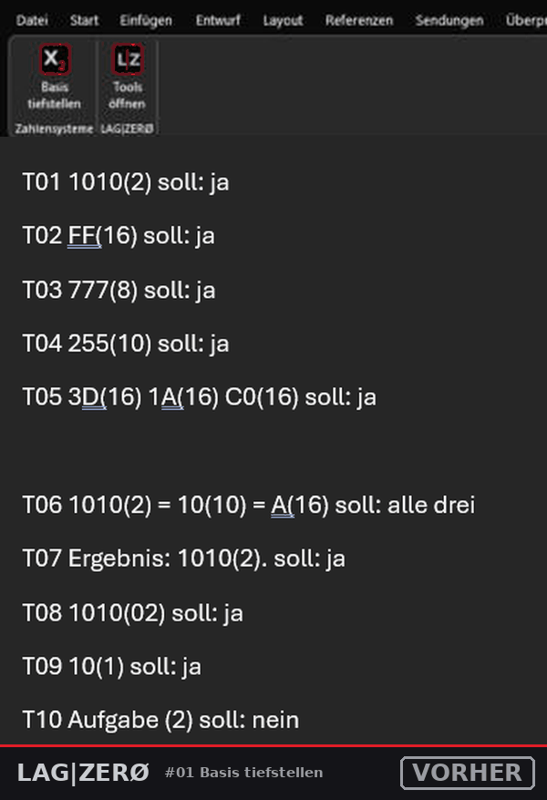
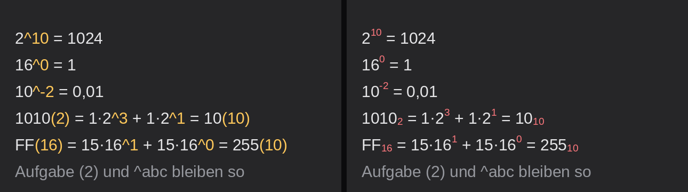

💬 Hilfe, Ideen & Community: discord.gg/wUFMj2dGX8
Du schreibst 1010(2) oder FF(16). Ein Klick macht daraus 10102 und FF16, im ganzen Dokument.

Unverändert bleiben: Aufgabe (2) mit Leerzeichen, (eier) und 11(100) mit 3 Ziffern.
Du schreibst 2^10, 10^2 oder 16^0. Ein Klick macht daraus 210, 102 und 160. Das ^ ist die Taste links neben der 1.

Alles formatieren macht #01 und #02 in einem Klick.
Unverändert bleiben: ^abc und 2^ 10 mit Leerzeichen.
⬇ LAGZERO_Word_Tools.zip herunterladen
Ausführliche Anleitung mit Bildern · 🎥 Installations-Video · Mac / Word im Browser: manifest.xml über „Mein Add-In hochladen"
1010(2) = 1*2^3 + 1*2^1 = 10(10), ohne Leerzeichen vor Klammer und ^.Der LAG|ZERØ Discord ist mein eigener Server. Angefangen hat er als privater Chat-Server mit Freunden. Heute zeige ich dort meine Troubleshoots, Tweaks und Projekte. Die baue ich, so weit es meine Zeit zulässt, als fertige Lösungen für Endnutzer: so einfach wie möglich.
Über Anregungen und Ideen freue ich mich sehr. Hast du eigene Projekte oder kennst welche? Teil sie mit uns, dann entwickeln wir sie zusammen weiter.